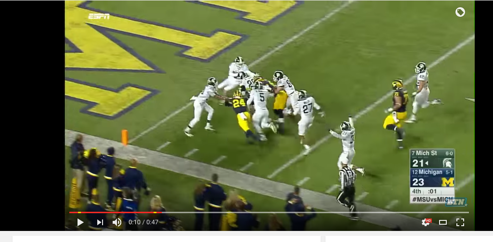

README BIO:
Hello, my name is Dennis Rumohr and I am graduating from MSU this semester. I dream so large that I need to remember to move slower and more realistic at times. I want to do what I can to "help" the world, but for the most part I find myself just needing to focus on survival. I suppose I am a bit greedy in a world with low resources. On the other hand, I really feel I do not need too much other than a few hobbies to fill the days and money saved to have security for myself and the people I care about. I have a lot of pride and I will not give it up unless you show me "correctly" that it is the selfless thing to do because I usually agree with being selfless and sacrificing for what is right. I believe you can always find a contradiction to something in this age, so I am starting to just let it be overall, but still deep down I will never accept imperfection. I suppose my philosophy is now, speak softly, carry a big stick, and give God a chance..........and since competition in this age is not viewed terribly, I have included a picture of something funny
